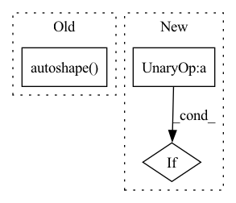

Pattern ID :23375
Before Change
if len(ckpt["model"].names) == classes:
model.names = ckpt["model"].names // set class names attribute
if autoshape:
model = model.autoshape() // for file/URI/PIL/cv2/np inputs and NMS
return model.to(device)
except Exception as e:After Change
from utils.general import LOGGER, check_requirements, intersect_dicts, logging
from utils.torch_utils import select_device
if not verbose :
LOGGER.setLevel(logging.WARNING)
check_requirements(exclude=("tensorboard", "thop", "opencv-python"))In pattern: SUPERPATTERN
Frequency: 3
Non-data size: 3
Instances Fragment ID: 73498225
Project Name: buxihuo/luck-yolo
Commit Name: 145c14f5a1fd0325985df05b2ec0c0970dd4ca9b
Time: 2022-07-01
Author: 84908793+buxihuo@users.noreply.github.com
File Name: hubconf.py
M Class Name: AnonimousClass
N Class Name: AnonimousClass
M Method Name: _create(7)
N Method Name: _create(7)
M Parent Class:
N Parent Class:
M File Name: hubconf.py
N File Name: hubconf.py
M Start Line: 36
M End Line: 64
N Start Line: 37
N End Line: 65
Before Change
model = hub_model
if autoshape:
model = model.autoshape()
return model.to(device)
After Change
(Adapted from yolov5.hubconf.create)
// set logging
if not verbose :
LOGGER.setLevel(logging.WARNING)
// set device if not given Fragment ID: 73498224
Project Name: fcakyon/yolov5-pip
Commit Name: b0bac9868253d1bab90a3dca736e074e16c70602
Time: 2022-04-08
Author: 34196005+fcakyon@users.noreply.github.com
File Name: yolov5/helpers.py
M Class Name: AnonimousClass
N Class Name: AnonimousClass
M Method Name: load_model(4)
N Method Name: load_model(4)
M Parent Class:
N Parent Class:
M File Name: yolov5/helpers.py
N File Name: yolov5/helpers.py
M Start Line: 28
M End Line: 50
N Start Line: 28
N End Line: 41
Before Change
hub_model = Model(model.yaml).to(next(model.parameters()).device) // create
hub_model.load_state_dict(model.float().state_dict()) // load state_dict
hub_model.names = model.names // class names
hub_model = hub_model.autoshape()
return hub_model
class YOLOv5:
def __init__(self, model_path, device, load_on_init=True):After Change
(Adapted from yolov5.hubconf.create)
// set device if not given
if not device :
device = "cuda:0" if torch.cuda.is_available() else "cpu"
attempt_download(model_path) // download if not found locally Fragment ID: 73498223
Project Name: fcakyon/yolov5-pip
Commit Name: 76ebd878019b840d93a80b96c54ee066588bbd27
Time: 2021-02-11
Author: fcakyon@gmail.com
File Name: yolov5/helpers.py
M Class Name: AnonimousClass
N Class Name: AnonimousClass
M Method Name: load_model(3)
N Method Name: load_model(2)
M Parent Class:
N Parent Class:
M File Name: yolov5/helpers.py
N File Name: yolov5/helpers.py
M Start Line: 13
M End Line: 20
N Start Line: 24
N End Line: 56